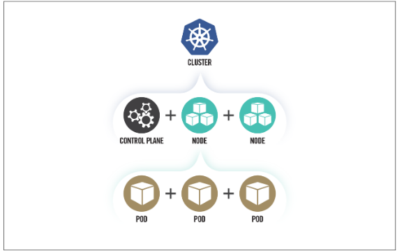

Mes highlights
My notes from this ressources: https://media.defense.gov/2021/Aug/03/2002820425/-1/-1/0/CTR_Kubernetes_Hardening_Guidance_1.1_20220315.PDF
-> Supply chain risks are often challenging to mitigate and can arise in the container build cycle or infrastructure acquisition. -> Malicious threat actors can exploit vulnerabilities and misconfigurations in components of the Kubernetes architecture, such as the control plane, worker nodes, or containerized applications. -> Insider threats can be administrators, users, or cloud service providers. Insiders with special access to an organization’s Kubernetes nfrastructure may be able to abuse these privileges.
This guide details the following mitigations:
- Scan containers and Pods for vulnerabilities or misconfigurations.
- Run containers and Pods with the least privileges possible.
- Use network separation to control the amount of damage a compromise can cause.
- Use firewalls to limit unneeded network connectivity and use encryption to protect confidentiality.
- Use strong authentication and authorization to limit user and administrator access as well as to limit the attack surface.
- Capture and monitor audit logs so that administrators can be alerted to potential malicious activity.
- Periodically review all Kubernetes settings and use vulnerability scans to ensure risks are appropriately accounted for and security patches are applied.

Kubernetes clusters can be complex to secure and are often abused in compromises that exploit their misconfigurations.
Kubernetes can be a valuable target for data or compute power theft.
Cyber actors seeking computational power (often for cryptocurrency mining) are also drawn to Kubernetes to harness the underlying infrastructure